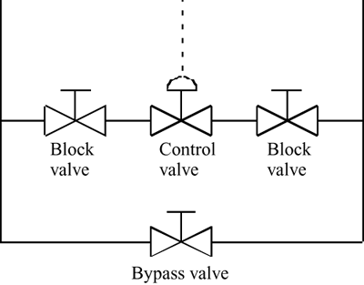

| [ Team LiB ] |
|
1.2 InstrumentationThe example level-control problem had three critical pieces of instrumentation: a sensor (measurement device), actuator (manipulated input device), and controller. The sensor measured the tank level, the actuator changed the flow rate, and the controller determined how much to vary the actuator, based on the sensor signal. There are many common sensors used for chemical processes. These include temperature, level, pressure, flow, composition, and pH. The most common manipulated input is the valve actuator signal (usually pneumatic). Each device in a control loop must supply or receive a signal from another device. When these signals are continuous, such as electrical current or voltage, we use the term analog. If the signals are communicated at discrete intervals of time, we use the term digital. AnalogAnalog or continuous signals provided the foundation for control theory and design and analysis. A common measurement device might supply either a 4- to 20-mA or 0- to 5-V signal as a function of time. Pneumatic analog controllers (developed primarily in the 1930s, but used in some plants today) would use instrument air, as well as a bellows-and-springs arrangement to "calculate" a controller output based on an input from a measurement device (typically supplied as a 3- to 15-psig pneumatic signal). The controller output of 3–15 psig would be sent to an actuator, typically a control valve where the pneumatic signal would move the valve stem. For large valves, the 3- to 15-psig signal might be "amplified" to supply enough pressure to move the valve stem. Electronic analog controllers typically receive a 4- to 20-mA or 0- to 5-V signal from a measurement device, and use an electronic circuit to determine the controller output, which is usually a 4- to 20-mA or 0- to 5-V signal. Again, the controller output is often sent to a control valve that may require a 3- to 15-psig signal for valve stem actuation. In this case the 4- to 20-mA current signal is converted to the 3- to 15-psig signal using an I/P (current-to-pneumatic) converter. DigitalMany devices and controllers are now based on digital communication technology. A sensor may send a digital signal to a controller, which then does a discrete computation and sends a digital output to the actuator. Very often, the actuator is a valve, so there is usually a D/I (digital-to-electronic analog) converter involved. Indeed, if the valve stem is moved by a pneumatic actuator rather than electronic, then an I/P converter may also be used. In the past few decades, digital control-system design techniques that explicitly account for the discrete (rather than continuous) nature of the control computations have been developed. If small sample times are used, the tuning and performance of the digital controllers is nearly equal to that of analog controllers. Techniques Used in This TextbookMost of the techniques used in this book are based on analog (continuous) control. Although many of the control computations performed on industrial processes are digital, the discrete sample time is usually small enough that virtually identical performance to analog control is obtained. Our understanding of chemical processes is based on ordinary differential equations, so it makes sense to continue to think of control in a continuous fashion. We find that controller tuning is much more intuitive in a continuous, rather than discrete, framework. In Chapter 16 we spend some time discussing techniques that are specific to digital control systems, namely model predictive control (MPC). Control Valve PlacementIn Example 1.1 and in most of the examples given in this textbook, we use a simplified representation for a control valve and signal. It should be noted that virtually all control valves are actually installed in an arrangement similar to that shown in Figure 1-12. When the control valve fails, the adjacent block valves can be closed; the control valve can then be removed and replaced. During the interim, the bypass valve can be adjusted manually to maintain the desired flow rate. Generally, these control valve "stations" are placed at ground level for easy access, even if the pipeline is in a piperack far above the ground. Figure 1-12. Typical control valve arrangement. When the control valve needs to be taken out of service, the two block valves are closed and the control valve is removed. The bypass valve can then be manually adjusted to control the flow. |
| [ Team LiB ] |
|